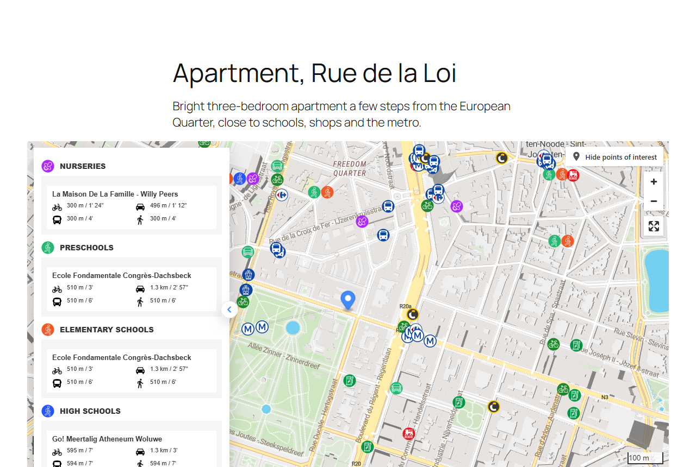
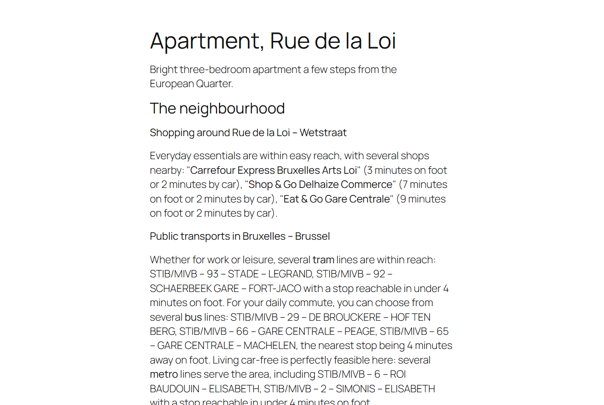

Yatmo gives real estate websites neighbourhood intelligence: schools, shops, public transport, healthcare and more around each property, with real travel times on foot, by bike, by car and by public transport, and a written summary of the area.
This module brings Yatmo to your Odoo website with two building blocks and two QWeb templates:
A Yatmo licence key is required. Yatmo is a paid service for real estate portals, agency networks and developers. Contact us to get a key; the module displays nothing to visitors until a key is entered.

Drag the Yatmo Map block onto a page, type the property address (or its coordinates), and pick the layout: map with summary, map with Yatmo scores, map above the summary, map only, summary only, summary in tabs. Isochrones, routes, pin or discreet circle, colours and zoom are in the same panel. Everything left out follows the site defaults.
The Yatmo Text block writes the neighbourhood description into the page itself, styled by your theme: choose the paragraphs, the heading level, and whether the street and city names appear in the headings. The text exists in the languages of the property's country.

For property pages rendered from your own model (or from products), call the templates from your QWeb views. Everything is rendered on the server, cached, and indexable:
<t t-set="yatmo" t-value="{'latitude': property.latitude, 'longitude': property.longitude}"/>
<t t-call="yatmo_map.map"/>
<t t-set="yatmo" t-value="{'address': property.street + ', ' + property.city, 'paragraphs': 'education,shopping'}"/>
<t t-call="yatmo_map.text"/>
Python: env['yatmo.map'].render_map(values), render_text(values),
build_params(values) and geocode(address, country, key).
Countries: Albania, Australia, Austria, Belgium, Bosnia and Herzegovina, Bulgaria, Canada, Croatia, Cyprus, France, Germany, Greece, Ireland, Italy, Luxembourg, Malta, Montenegro, Morocco, the Netherlands, Portugal, Serbia, Slovenia, Spain, Switzerland and the United Kingdom.
This module relies on Yatmo, a third-party service operated by Yatmo SRL, to display its content and to locate addresses.
https://map.yatmo.com/plugin.html): every page with a Yatmo Map block or
template embeds this page in an iframe, with your licence key, the country, the language, the display options and the
property coordinates. When favourite addresses are enabled, it also receives an anonymous identifier of the
logged-in visitor (a hash of the Odoo user id) and the addresses that visitor saves.https://<country>.yatmo.com/Summary/text): for each property,
your server sends the property coordinates and your licence key, and stores the returned text for 30 days.https://<country>.yatmo.com/Geolocation): when a block or template
is given an address instead of coordinates, your server sends that address, the country and your licence key once,
and stores the result for 90 days.Yatmo sets no cookies. Terms of service, privacy policy, documentation.